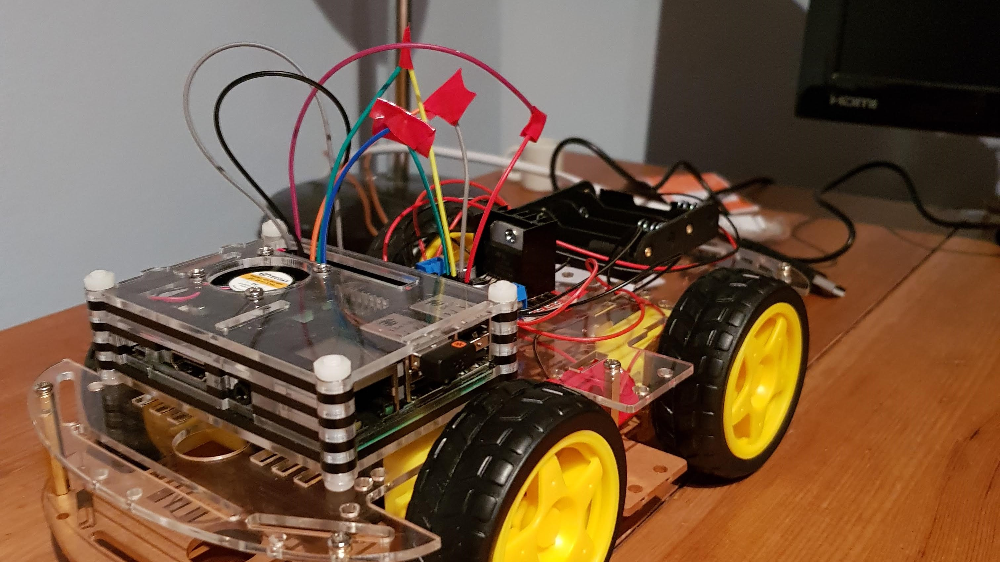
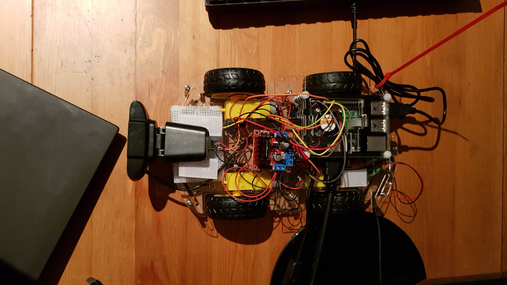
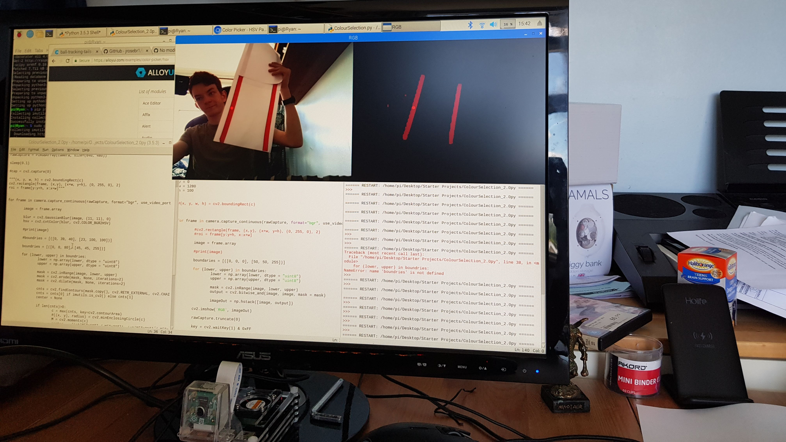

Self Driving Car
My driverless car was the first large project I had ever undertaken, additionally it involved plenty of areas of programming that I had no experience in. For these reasons my driverless car was an immense learning experience and chance to grow as a computer scientist.
The car had to understand visual data to track a road, halt at stop signs and adapt driving speed to the level set by passing speed limit signs. This pushed me to grow my understanding of computer vision and cascade filters at an early stage of learning computer science, causing me to be propelled further than my peers in my ability to use and manipulate images on computers. I had to face plenty of challenges and craft intuitive solutions to bypass them, for example the main computer (a Raspberry Pi) was not powerful enough to process text in real time, I came to the conclusion that using a powerful server that could receive an image and send back the text content was the best action to take.
The final product did not meet every requirement, but taught me efficiency in programming to make the program and data transfer faster. My A-level teacher said my project was the most impressive she had seen that year and it is my most proud endeavour I have ever undertaken.
To see testing of my driverless car go to this channel:
Ryan Slater